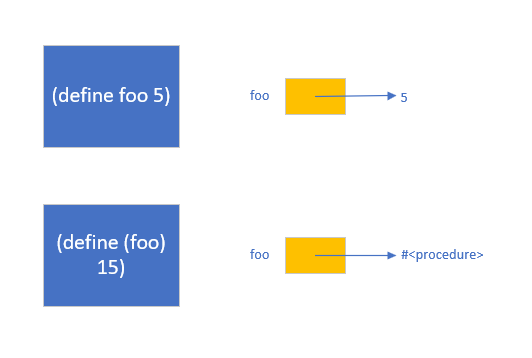

本章主要介绍 `scheme` 的基本特点与语法。What is Scheme?
scheme 作为 Lisp 的一个变种，具有以下特点：
- 词法作用域、块结构和动态类型的函数式编程语言。
First-class procedures和First-class continuations的特点，其中First-class xx指xx可以同时作为参数传递和返回值。- 参数是以值传递，所有的值都是引用。
- 具有强大的
宏，能够实现语法变换。
scheme 语法定义十分简单，通过 scheme 的学习让我们更加清晰的了解程序语言的本质。
Basic Scheme Features
Code Consists of Expressions
Parenthesized Prefix Expressions
scheme 代码是由带括号的前缀表达式组成，前缀表达式初看与我们日常习惯相悖，比如其他语言的 3+5 在 scheme 中变成了 (+ 3 5) ，但是带括号的前缀表达式却让 + - / * 等运算符与过程调用完美的统一了，并且避免了运算的优先级歧义，更能体现计算的本质。
Expressions Return Values, But May Have Side-Effects
scheme 表达式同时具有表达式和语句的特点，既能返回值也能产生副作用。 (set! foo 3) 等价于 c 语言的 foo=3 。函数式编程推崇无副作用操作，所以产生副作用的操作后都有感叹号。
Defining Variables and Procedures
在 scheme 中定义变量的方式为 (define foo 5) ，其中 define 做了以下三件事：
- 在作用域中声明了一个
foo变量。 scheme给foo变量分配存储空间，该过程称为绑定，将变量绑定到某个内存地址，通过变量引用该内存区域。- 将
foo引用的内存初始化为5。
** scheme 中一切值都是指向对象的指针**。
foo 变量也可以指向过程：
(define (foo)
15)
Most Operators are Procedures vs Special Forms
在传统语言中 a+b 是一个表达式，而 scheme 中却是过程调用，由于函数在 scheme 中是一等公民，所以 Scheme 中绝大多数的表达式都是过程组成的。但是有少部分语法是 特殊形式 ，如 define set! 等，当解释器看到特殊形式的语法时，会特殊处理。特殊形式包含以下几个方面：
- 结构控制如
ifcondand等。 define- 本地变量定义如
let及其变种letreclet* - 循环构造，
donamed let quote和quasiquote，可以以文本字面量书写复杂数据结构lambdamacros
Control Structures are Expressions
由于 scheme 中控制结构也是表达式，所以 scheme 没有传统程序的 return 语句，表达式的值作为过程的返回值，如果返回值不需要可以忽略。
int min(int a, int b)
{
if (a < b)
return a;
else
return b;
}(define (min a b)
(if (< a b)
a
b))The Boolean Values #t and #f
前面说了在 scheme 中一切值都是指向对象的指针，所以 scheme 提供了两个唯一的对象表示真值和假值。false object 和 c 语言中的 0 是不一样的，也不同于 lisp 中的空指针，它代表一个独一无二的对象。
Some Other Control-Flow Constructs: cond, and, and or
为了更加方便的写代码，scheme 为我们提供了类似与 switch case 的语法糖 cond ，cond 语法糖可以用 if 语句实现。
All Values are Pointers to Objects
All Values are Pointers
所有的 scheme 对象都分配在堆上，通过指针引用，且不用担心解引用的问题，因为在 scheme 中解引用是统一的。一旦计算过程需要值， scheme 会自动 dereference a pointer to a value 。
比如表达式 (+ 2 4) scheme 会有一个指向 2 的指针和一个指向 4 的指针，并作为参数传递给过程 + ，该过程返回一个指向 6 的指针，所有的参数和返回值都是指针，如果我们忽略指针操作，你会发现这和其他语言语义上是一致的。
我们知道在 c 语言中会有 指针语义 和 原始值语义 ，比如 2 是原始值，int * p 中的 p 是一个指针，这就要求我们时刻注意区分，变量到底是原始值还是指针，其中涉及到强制类型转换。而 scheme 中所有值都是指针，把一切都统一了，你可以说 scheme 中没有指针变量或者 scheme 一切都是指针。
Most Implementations Optimize Away Many Pointers
根据上面所述，所有的值都是指针，你可能会有疑问，对应数字 2 难道 scheme 也是用指针实现的？这样的化效率必然很低。其实 Everything's a pointer 是从程序员的层面观察到的，是 scheme 语义上达到的一个效果。在真正实现的时候，会进行很多优化，比如一个变量是数字，那么该变量往往会直接存储该数字的值，但怎么区分一个变量是立即值还是指针呢？ scheme 会将变量值的某几位作为标记，以区分是立即值还是指针，这种解决方案叫做 tagging 。直接存储立即值在变量里，是否会打破刚刚提到的 Everything's a pointer 抽象呢？其实不会，因为程序员是无法看到这中间的区别的。
Objects on the Heap
从语义上来说，任何 scheme 对象都分配在堆上，由属性构成，属性的值可以是任何 scheme value ，比如 tagged immediate value or a tagged pointer to another heap-allocated object 。
比如 pair 就是一个拥有两个属性的对象，这两个属性可以是数字、字符串、布尔值或者指向另一个对象的指针等。 pair 由 con 创建，示例如下：
在绝大多数 scheme 实现中，堆分配的对象都有一个头部，该头部记录的该对象的类型信息，对程序员来说的不可见的。其中数字 22 15 可能是由 30 位 bit 其中两位 tag 信息的立即数。
Scheme Reclaims Memory Automatically
在 c 语言中，数据对象会以以下三种方式分配存储空间：
- allocated statically (as in the case of global variables)
- on an activation stack as part of a procedure activation record (as in the case of local variables)
- dynamically allocated on the heap at run time using an allocation routine like malloc or new
由于 scheme 所有对象都分配在堆上，通过指针引用。 Lisp 家族语言是最早实现垃圾回收机制的，也就是说内存对应程序员是无线的，我们只管使用，由 GC 负责内存的回收。 GC 通过引用计数、标记-清除等策略保证，没有被引用的对象能够及时清理，而需要的对象一直存在。
Objects Have Types, Variables Don’t
根据前面所述 scheme 中的所有变量都是同一种类型 pointer to anything 。那么 scheme 是无类型的吗？虽然 scheme 变量是无类型的，但是 scheme 对象却有一个带有类型信息的头部，你无法将 + 应用于两个字符串，所以 scheme 是 动态类型 ，其类型检查发生在运行时。好的编译器会在编译期间进行类型推导，生成更高效的代码，所以不用太过担心效率问题。
The Empty List
在 scheme 中存在一个空指针值，也把它叫做 the empty list ，打印出来为 () 。空列表是一个比较特殊的对象，空指针是一个指向特殊结尾的列表对象。我们可以忽略空指针和空列表在语义上的区别，对于空指针可以使用 null? 来判断。那么为什么空指针对象会被称为空列表呢？后续会给出解释，主要与 scheme 大量使用列表有关。
Pairs and Lists
cdr-linked lists
前面我们介绍了 pair ，本节介绍 list ，其实 scheme 中根本没有 list 数据类型，list 不过是一系列 pair 构成，以空指针结束，而空指针是空列表，包含以空指针结束的0个 pair ，这也解释了刚刚提到的为什么空指针也被称作空列表。
(define foo '(22 15 6)) 其结构如下：
更直观的表现形式是：
顺便提一下 pair 和 list 相关的几个操作， car 返回 pair 第一部分， cdr 返回 pair 的第二部分，类型为 list ，cons 生成一个新的 pair ，第一个域指向第一个参数，第二个域指向第二个参数，第二个参数一般为 list 。
Lists and Quoting
如果每次生成 list 都用 cons 未免太过繁琐， scheme 提供了用 quote 以字面量形式书写 list 的方式。 (quote (1 2 3)) 返回 list (1 2 3) 。
对于 quote 注意以下几点：
quote是一种特殊形式，不是procedure。quote返回的是数据结构，不是字符串对象，该数据结构可以嵌套，可以是列表、树或者数组等等。quote多次执行，返回的是同一个数据结构，如果要每次返回不同的数据结构，请使用list。quote可用引号代替'。
Where the Empty List Got its Name
通过前面的 list 和 quote ，我们知道空指针和空列表的联系了。对于给定的列表 '(1 2 3)' 第一次 cdr 返回的是列表 (2 3) ，继续 cdr 返回的是列表 (3) ，再次 cdr 返回的就是空列表 () ，包含 0 项的列表等和空指针是一回事。
Some Handy Procedures that Operate on Lists
由于 scheme 的 list 十分灵活和强大，所以 scheme 提供了一些处理列表的过程。
length
length 返回列表的长度，如 (length '(0 #t #f)) returns 3 。
list
list 接收一个或者多个参数，构造前面提到的 cdr-linked 列表，每个 pair 的第一个域指向对应的参数。
list 和 cons 都可以构造列表，但是 list 直接用参数构建列表，而 cons 是将新的数据项加入到已有列表中。有一个细节值得注意，构建只有一个数据项的列表，采用 list 是 (list 1) 而用 cons 语法为 (cons 1 '()') 。
append
append 输入参数为两个或者更多的列表，构建一个新的列表。如 (append '(1 2) '(3 4)) 返回 (1 2 3 4) ，但是 (list '(1 2) '(3 4)) 返回 ((1 2) (3 4)) 。注意两者之间的区别， append 要求其参数为列表，将各个列表中的元素组成一个新的列表，而 list 对其元素并无要求。另外值得注意的是， append 只会连接顶层的元素，并不会展平(flatten)嵌套的结构。如
(append '((1 2) (3 4))
'((5 6) (7 8)))返回
((1 2) (3 4) (5 6) (7 8)) 。此外，append 的元素是共享的，改变其中一个其他会跟着改变，这也是强调 无副作用 计算的原因。
reverse
和 append 类似，将给定列表反序。
(reverse '(1 2 3 4)) ;(4 3 2 1)
(reverse '((1 2) (3 4)));returns ((3 4) (1 2)), not ((4 3) (2 1))member
schemeVal x list –>bool
传入一个搜索的值和列表，判断列表中是否有该值。
Recursion Over Lists and Other Data Structures
scheme 中递归具有举足轻重的地位，用递归过程操作递归数据结构将十分简单。例如我们要深拷贝 pair-tree ，首先 pair-tree 的递归定义如下：
- a non-pair (leaf), or
- a pair whose car and cdr are pair-trees
第一个规则是基本条件，不需要递归，第二个条件的定义涉及到递归，某个内部节点的 car cdr 也是 pair-trees 。编写对应的递归程序是比较容易的，首先将对应数据结构的递归定义描述清楚，然后用程序按照递归定义遍历数据结构并计算结果。
(define (pair-tree-deep-copy thing)
(if (not (pair? thing))
thing
(cons (pair-tree-deep-copy (car thing))
(pair-tree-deep-copy (cdr thing)))))pair-tree-deep-copy 能够拷贝 pair-tree 但是拷贝 proper list 时就有问题，因为 其 car 并非是一个 pair ，导致 pair-tree-deep-copy 直接使用 car 值，而没有进一步拷贝。 proper list 拷贝定义如下：
- the empty list if the original list is empty, or
- (if the list is nonempty) a pair whose car value is the same as the car of the original list, and whose cdr value is a copy of the rest of the original list.
代码如下：
(define (list-copy lis)
(cond ((null? lis)
'())
(else
(cons (car lis)
(list-copy (cdr lis))))编写递归的关键是准确定义某个过程返回什么，以及假定该过程确实返回了该结果，然后利用归纳法，将子问题合并得到原过程的结果。
Type and Equality Predicates
由于 scheme 的值是指向堆对象的指针，那么其数据类型是什么，决定了能够进行何种操作。
Type Predicates
scheme 提供了几个判断数据类型的谓词，number?, string?, character?, vector?, pair? ,and port?
Equality Predicates
相等 的含义在不同环境是不一样的， scheme 提供了 equal? eq? eqv? 等多种方式，equal? 指结构上的值相等，如 (equal? '(1 2 3) '(1 2 3)) 返回 #t ；而 eq? 比较的是两个对象的地址是否相等。由于 eq? 比较的是两个变量是否引用同一个对象，是指针的比较，所以相对来说更快。 eqv? 用于比较两个数字是否相等，如果传入的不是数字，会立即报错。
Choosing Equality Predicates
这么多种相等比较，我们该如何选择呢？可以用以下几条规则判断：
- eq? is useful for fast identity (same object) comparisons of non-numbers,
- = performs numeric comparisons on numbers,
- eqv? is like eq?, but treats copies of the same number as though they were the same object, and
- equal? performs a “deep” comparison of the structure of data structures. (It uses eqv? for components that are numbers.)
Quoting and Literals
在传统程序中，字面量往往只能表示有限的数字或者字符串，而 scheme 中，字面量可以创建复杂、嵌套的数据结构。另一方面， scheme 的代码和字面量数据十分相似。比如，(min 1 2) 作为表达式代表求较小值，如果我们用字面量 (define foo (quote (min 1 2))) 定义 foo ，不难发现 foo 代表的数据结构和表达式形式上是一致的，唯一区别便是，一个表示表达式，另一个代表 list 。该 list 结构如下：
Simple Literals and Self-Evaluation
如果仔细观察会发现，scheme 中数字和布尔值并没有加引号来避免 scheme 对待其他表达式一样执行它，那么数字和布尔值是否被执行了呢？这涉及到 scheme 中特殊的规则，数字和布尔值的执行结果就是它本身，这种表达式叫做 自执行（self-evaluating） 。
Local Variables and Lexical Scope
还记得最前面我们提到， scheme 是支持嵌套作用域块结构的语言。代码块可以嵌套，每个代码块可以定义局部变量，该变量的作用范围为该代码块。
另一方面 scheme 支持词法作用域，也叫静态作用域，从字面理解，静态是指我们通过阅读代码便可以确定每个变量的作用范围。相反动态作用域指变量的作用范围必须在运行时确定，这会带来很多麻烦，基本已经没有语言采用动态作用域了。
let
让我先来看段 c 语言代码：
{ int x = 10;
int y = 20;
foo(x,y);
}当进入代码块时，会分配存储空间给本地变量 x y ，并且存储空间会被初始化为 10 20 ，以上这个过程我们称为 x y 被绑定了，即绑定是一种 name 到 storage 的关联。当离开代码块时 x y 的绑定消失了，可能在外层 x y 是和其他值绑定的。在 c 语言中局部变量的存储空间一般分配在活动栈上。
scheme 的 let 与上述代码类似：
...
(let ((x 10)
(y 20))
(foo x y))
...有一点需要注意， scheme 的局部变量分配在堆上，那效率是不是很低呢？好的编译器会将其优化存储在寄存器中，所以不用担心效率问题。
Lexical Scope
刚刚提到，scheme 支持嵌套块结构，那么内部的块可能会重复定义局部变量：
(let ((x 10) ; outer binding of x
(a 20)) ; binding of a
(foo x)
(let ((x (bar)) ; inner binding of x
(b (baz x x))) ; binding of b
(quux x a)
(quux y b))
(baz x a) ; refers to outer x (and a)
(baz x b)) ; illegal?首先声明一个概念 bingding environment ，绑定环境就是名称集合到存储位置的映射。在程序执行的每个点能够 看得到 的绑定关系就是程序执行的环境。最外层是全局绑定关系，当进入一个新的块时，会生成一个新的绑定关系，同时链接到上层环境中，如果存在同名变量，内层变量会覆盖外层变量绑定。当需要查找某个变量的绑定关系时，由内向外依次查找。块结构和作用域可以用轮廓图清晰的表示：
从图中可以看出， let 前面定义的变量对后续变量莱索是不可见的。如果需要可见需要用 let* 。
let*
前面说了， let 前面定义的变量对后续变量不可见，为了达到可见的效果我们可以嵌套 let :
(let ((a-structure (some-procedure)))
(let ((a-substructure (get-some-subpart a-structure)))
(let ((a-subsubstructure (get-another-subpart a-substructure)))
(foo a-substructure))))需求是满足了，如果变量太多，这样写起来肯定不优雅，所以 scheme 提供了 let* 语法糖：
(let* ((a-structure (some-procedure))
(a-substructure (get-some-subpart a-structure))
(a-subsubstructure (get-another-subpart a-substructure)))
(foo a-substructure))))Procedures
Procedures are First Class
在 scheme 中，procedure 是一等的，可以将 procedure 作为参数或者返回值。对应表达式 (+ a b) ，scheme 会做一下事情：
- look up the value of (the current binding of) the variable +, which we assume is a procedure,
- look up the values of (the current bindings of) the variables a and b, and
- apply the procedure to those values, i.e., call it with those values as arguments.
注意 procedure 不仅仅只能以 name 提供，如果该表达式的值是一个 procedure 也是可以的。如 ((look-up-appropriate-procedure key) foo bar) 。
Anonymous Procedures and lambda
在 scheme 中用 lambda 代表匿名过程，使用 define 定义过程不过是 lambda 的语法糖。
(define (double x)
(+ x x))等价于
(define double (lambda (x)
(+ x x)))lambda and Lexical Scope
前面介绍过 scheme 是词法作用域，那么在定义 lambda 过程时，应该创建哪些东西呢？首先 lambda 包含形式参数和函数体，这里有一个概念 自由变量 指函数体中不包含形参的变量，可以这么理解，那些在函数体中和形式参数同名的变量被约束了，其他的变量是自由的。当 lambda 被执行时自由变量应该在哪儿找它的绑定呢？答案是 lambda 的环境，所以创建 lambda 时需要记录过程所在环境。包含 lambda 形参、函数体以及所在环境的整体叫做 闭包 。
Local Definitions
如果某些过程只在特定的范围有效，可以使用局部定义，而不用定义成全局的。
(define (quadruple x)
(let ((double (lambda (x)
(+ x x))))
(double (double x))))局部过程也遵守词法作用域。
Recursive Local Procedures and letrec
根据前面的描述，可以利用 let 和 lambda 来定义本地过程，但是怎么定义递归过程呢？
尝试：
(define (foo x)
(let ((local-proc (lambda (y)
...
(local-proc ...) ; recursive call? No.
...)))
...
(local-proc x)
...)上述代码的问题是，local-proc 对于其函数体不可见，其作用域范围如下图所示：
这正是 letrec 解决的事， letrec 先声明所有变量，分配存储空间，但是并未赋值。 letrec 保证所有变量都是可见的。其作用域如下图所示：
letrec 对互递归也能很好的支持：
(define (my-proc)
(letrec ((local-proc-1 (lambda ()
...
(local-proc-2)
...))
(local-proc-2 (lambda ()
...
(local-proc-1)
...)))
(local-proc-1))) ; start off mutual recursion by calling local-proc-1Multiple defines are like a letrec
有了 letrec 我们可以解释 define 的工作机制了。
...
(define (foo)
(... (bar) ...))
(define (bar)
(... (baz) ...))
(define (baz)
(... (quux) ...))
...
(foo)
...
;等价于
...
(define foo
(lambda ()
(... (bar) ...)))
(define bar
(lambda ()
(... (baz) ...)))
(define baz
(lambda ()
(... (foo) ...)))
...
(foo)
...
;等价于
(letrec (...
(foo (lambda ()
(... (bar) ...)))
(bar (lambda ()
(... (baz) ...)))
(baz (lambda ()
(... (foo) ...)))
...)
...
(foo)
...)同样的局部过程也可以用 letrec 去糖：
(define (my-proc)
(define (local-proc-1)
...)
(define (local-proc-2)
...)
(local-proc-1)
(local-proc-1))
;等价于
(define (my-proc)
(letrec ((local-proc-1 (lambda () ...))
(local-proc-2 (lambda () ...)))
(local-proc-1)
(local-proc-2)))
;去糖
(define my-proc
(lambda ()
(letrec ((local-proc-1 (lambda () ...))
(local-proc-2 (lambda () ...)))
(local-proc-1)
(local-proc-2))))